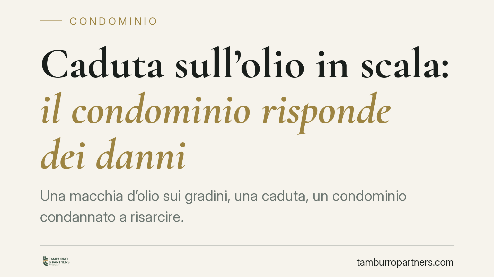

Caduta sull'olio in scala: il condominio risponde dei danni
Una macchia d'olio sui gradini, una caduta, un condominio condannato a risarcire. Con la sentenza 3417/2026 il Tribunale di Firenze torna sulla responsabilità da cose in custodia: il condominio risponde dei danni causati dalle parti comuni, salvo provare il caso fortuito. Una prova che, in concreto, raramente regge.

Il caso
Un condomino scivola su una macchia d'olio presente sui gradini di una scala comune e riporta lesioni. Chiede il risarcimento al condominio. Il Tribunale di Firenze, Sez. II Civile (sent. 3417/2026, 15 giugno 2026), accoglie la domanda: le parti comuni sono nella custodia del condominio, che risponde dei danni a meno di dimostrare un fattore esterno imprevedibile e inevitabile.
La decisione non introduce principi nuovi, ma li applica con rigore. Ed è proprio il rigore sull'onere della prova a meritare attenzione.
Inquadramento normativo
La chiave è l'art. 2051 del Codice civile: "Ciascuno è responsabile del danno cagionato dalle cose che ha in custodia, salvo che provi il caso fortuito".
Si tratta di una responsabilità oggettiva: non occorre dimostrare una colpa del custode. Al danneggiato basta provare due cose: il danno subìto e il nesso causale tra il danno e la cosa in custodia (qui, la scala comune resa pericolosa dall'olio). Non deve provare la negligenza del condominio.
Il condominio, in quanto custode delle parti comuni (scale, androni, cortili ex art. 1117 c.c.), ha un potere di controllo e gestione su quei beni. Per liberarsi dalla responsabilità deve fornire la prova del caso fortuito: un evento esterno, imprevedibile e inevitabile, che ha interrotto il nesso causale. Può rientrarvi anche la condotta anomala e incauta dello stesso danneggiato, se assume i caratteri dell'imprevedibilità.
Nel caso fiorentino questa prova è mancata. La presenza di olio sui gradini non è stata ricondotta a un fatto improvviso e inevitabile, con conseguente condanna.
Implicazioni pratiche
Per gli amministratori e per i condòmini il messaggio è netto: l'art. 2051 c.c. sposta il peso probatorio sul custode. Dire "non sapevamo della macchia" o "non è colpa nostra" non basta. Occorre dimostrare che l'evento era talmente imprevedibile e repentino da non poter essere evitato con la normale vigilanza.
Questo significa che una manutenzione carente, una pulizia irregolare o l'assenza di controlli periodici espongono il condominio. La macchia d'olio presente da tempo, o comunque non riconducibile a un fatto istantaneo e incontrollabile, pesa a sfavore del custode.
Attenzione anche al profilo assicurativo. Una polizza di responsabilità civile del fabbricato può coprire eventi di questo tipo, ma la copertura va verificata nei massimali e nelle esclusioni. Spesso la contestazione nasce proprio dalla corretta e tempestiva denuncia del sinistro all'assicuratore.
Sul versante del danneggiato, invece, resta decisiva la prova del nesso causale: la dinamica della caduta, lo stato dei luoghi, la presenza della sostanza scivolosa. Fotografie, testimonianze immediate e certificazione medica tempestiva fanno la differenza.
Cosa fare in concreto
- Programmate la manutenzione delle parti comuni con cadenza documentata: pulizia delle scale, illuminazione, verifica dello stato dei gradini. La tracciabilità dei controlli è la prima difesa contro una contestazione ex art. 2051 c.c.
- Segnalate e rimuovete subito ogni fonte di pericolo (liquidi, dislivelli, pavimentazione ammalorata). In attesa dell'intervento, apponete segnaletica di avviso.
- Denunciate tempestivamente il sinistro all'assicurazione del fabbricato, rispettando i termini di polizza, e conservate ogni documento utile.
- Se siete il danneggiato, raccogliete prove immediate: fotografie dei luoghi, dati dei testimoni, referto del pronto soccorso con indicazione della dinamica.
- Prima di agire o resistere in giudizio, fate valutare la posizione a un professionista: la differenza tra condanna e assoluzione si gioca quasi sempre sulla prova del caso fortuito.
Un principio consolidato
La sentenza di Firenze conferma un orientamento ormai stabile: il condominio custode risponde dei danni derivati dalle parti comuni, e la via d'uscita del caso fortuito è stretta. Più che confidare nella scusante, conviene investire nella prevenzione documentata. È la gestione ordinaria, prima ancora che il contenzioso, a determinare l'esito di queste controversie.
---
*Contributo informativo a cura di Tamburro & Partners - Avv. Giuseppe Tamburro. Non costituisce parere legale.*
Ogni condominio ha una storia a sé.
Se gestisci un'amministrazione e vuoi un confronto su una specifica questione condominiale, scrivi allo studio. Ti rispondiamo entro un giorno lavorativo.